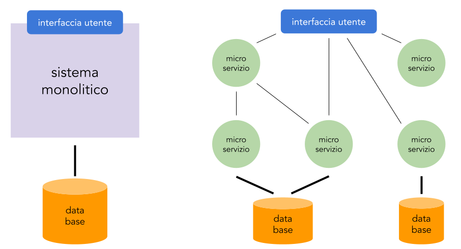

Architettura del sistema
Dovendo costruire un sistema articolato nel suo progetto possiamo prendere in considerazione due opposte soluzioni: una architettura monolitica o una basata su microservizi.
Una architettura monolitica prevede che il sistema sia sviluppato come un unico programma: un sistema di questo tipo ha alcuni vantaggi come la facilità iniziale di sviluppo, la possibilità di ottimizzazione e la semplicità di fare test globali. Ci sono però anche degli svantaggi: quando crescono sono più difficili da mantenere, è difficile cambiare le tecnologie utilizzate e hanno bassa scalabilità.
In una architettura a microservizi non ho a che fare con una entità unica ma con più programmi che offrono singoli servizi, un po' seguendo l'idea "fai una sola cosa e falla bene". Fondamentalmente usando questa architettura gruppi più piccoli si sviluppatori possono lavorare su un singolo servizio che può essere rilasciato molto velocemente, i singoli gruppi sono liberi di scegliere la tecnologia da usare e di cambiarla e oltre questo gli errori che riaguardano un singolo servizio sono più facili da trovare. Ovviamente c'è un rovescio della medaglia, ad esempio: il sistema non ha caratteristiche comuni, ogni volta che si aggiunge un microservizio il gruppo di sviluppo si deve organizzare per suo conto.

Cosa è Spring Boot
Spring Boot è una estensione del framework Spring il cui scopo è di mettere facilmente in esecuzione micro servizi web scritti in Java. Si tratta di un framework cioè di un insieme di componenti preconfezionati che facilita lo sviluppo di software, spesso utilizzando specifiche strategie di sviluppo.
Un framework si differenzia da quelle che chiamiamo librerie in alcuni aspetti:
- la modalità con cui si svolgono le operazioni è dettata dal framework e non da chi lo usa
- esistono una serie di comportamenti di default
- chi usa il framework può estendere le sue funzionalità ma non modificarlo
Perché Spring Boot
Non è certo l'unico framework per scrivere applicazioni web ma:
- riduce di molto il tempo di sviluppo aumentando la produttività
- evita la scrittura parti di codice ripetitive e file di configurazione
- è molto facile accedere ai database e salvare oggetti Java
- adotta una strategia "Opinionated Defaults Configuration", in pratica in base alle dipendenze decide delle configurazioni di default
- fornisce un server web integrato per sviluppare le applicazioni (tomcat o altri)